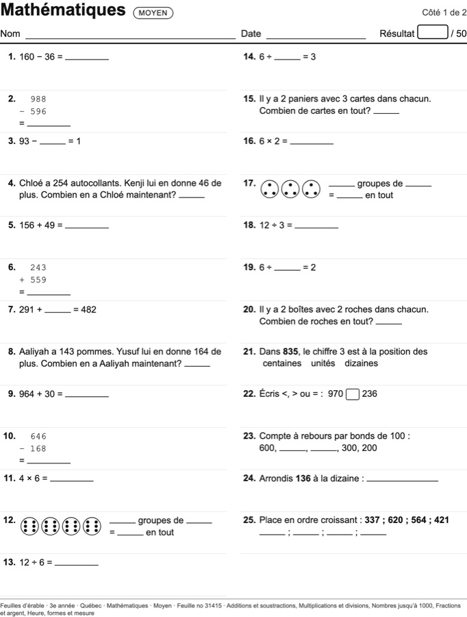
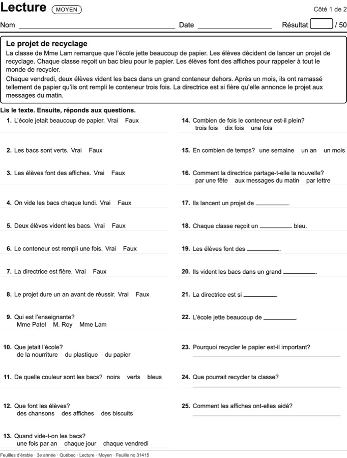
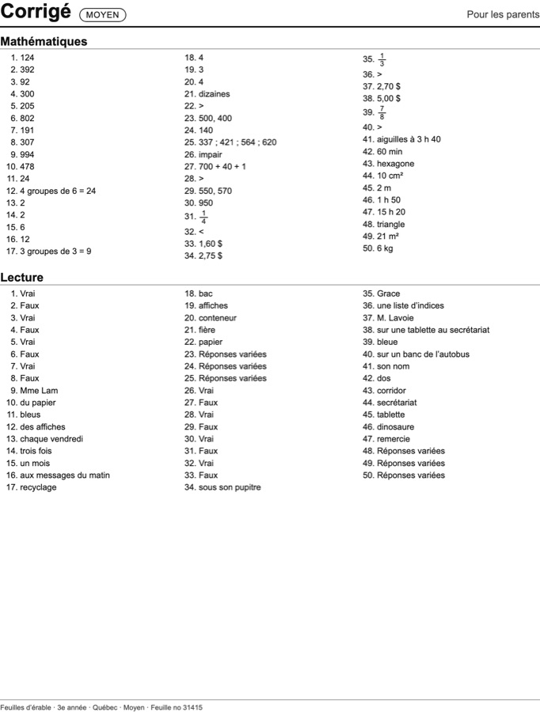

Des feuilles à imprimer de la maternelle à la 5e secondaire, avec un corrigé pour les parents. Imprimez-les quand vous voulez, ou recevez un nouveau PDF après l’école.
Touchez une année pour ouvrir les feuilles du jour. Aucun compte requis.
Hors Québec? Le site anglais va de la maternelle à la 12e année.
Trois étapes faciles, environ une minute.
Facile, Moyen ou Difficile. Chaque enfant a sa propre année et son niveau.
Mathématiques, lecture, français et anglais : 2 pages chacun, recto verso.
Les 2 dernières pages sont les réponses pour les parents.



De vraies pages d’une feuille de 3e année.
Créez un compte gratuit, ajoutez vos enfants et activez le courriel quotidien. Il arrive vers 16 h les jours d’école, sauf les fins de semaine et les jours fériés de votre province.
Les comptes ouvrent bientôt. Vous pouvez déjà utiliser les feuilles gratuitement.
Oui. Les feuilles et le courriel quotidien sont gratuits pendant notre lancement. Aucune carte de crédit.
Non. Tout le monde peut imprimer des feuilles pour n’importe quelle année. Le compte sert seulement au courriel quotidien et à garder l’année et le niveau de chaque enfant.
Les questions suivent ce que les enfants apprennent habituellement à chaque année : nombres, opérations, fractions, mesure, argent, lecture, grammaire, orthographe et anglais.
Les familles des autres provinces reçoivent les feuilles en anglais, de la maternelle à la 12e année, avec le français comme langue seconde.
Décochez-le dans Mon compte, en tout temps. Vous pouvez aussi supprimer votre compte, ce qui efface tout.
Nous gardons seulement votre courriel, votre province et le prénom ou surnom, l’année et le niveau de chaque enfant. Rien n’est vendu ni partagé. Lire la politique de confidentialité.